Get to know Canada
Canada is a diverse and vibrant country known for its breathtaking landscapes, rich cultural heritage, and welcoming communities.
As the second-largest country in the world, it offers everything from bustling cities like Toronto and Vancouver to stunning natural
wonders like the Rocky Mountains and Niagara Falls. With a strong economy, world-class education, and a high quality of life,
Canada is an ideal place to live, work, and explore. Whether you're drawn to its multicultural cities, outdoor adventures, or
innovative industries, Canada has something for everyone. Experience the warmth of Canadian hospitality and discover why it's one
of the most admired countries in the world!
Learn more about Canada's provinces and territories
-
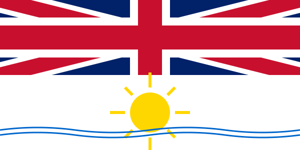
British Columbia
Canada's westernmost province. Area: 944,735 sq km. Known for stunning Pacific coastline, Vancouver, and diverse ecosystems from rainforests to mountains.
-
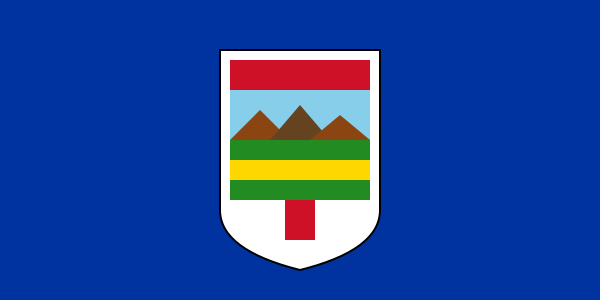
Alberta
Area: 661,848 sq km. Home to the Canadian Rockies, Calgary Stampede, and a thriving energy sector. Major cities: Calgary and Edmonton.
-
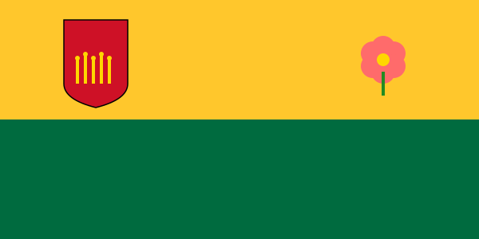
Saskatchewan
Area: 651,036 sq km. Known as Canada's breadbasket with vast prairies and wheat fields. Rich in potash and agricultural resources.
-
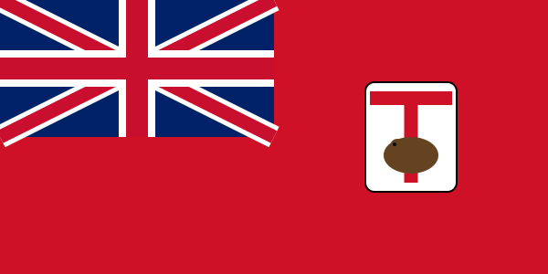
Manitoba
Area: 647,797 sq km. Prairie province at the heart of Canada. Winnipeg is the capital. Known for polar bears in Churchill.
-
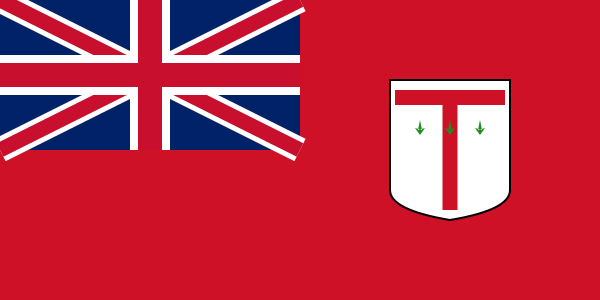
Ontario
Area: 917,741 sq km. Most populous province. Home to Toronto, Ottawa (capital), and Niagara Falls. Economic powerhouse of Canada.
-
Quebec
Area: 1,542,056 sq km. Predominantly French-speaking with distinct culture. Montreal and Quebec City showcase European charm.
-
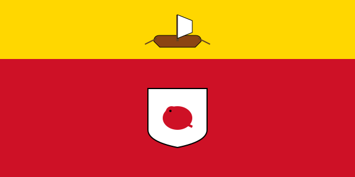
New Brunswick
Area: 72,908 sq km. Maritime province with Bay of Fundy's dramatic tides. Officially bilingual with rich Acadian heritage.
-
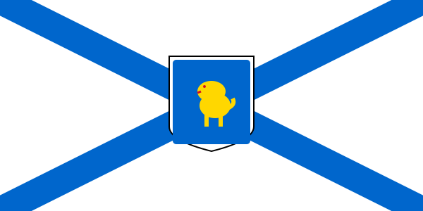
Nova Scotia
Area: 55,284 sq km. Atlantic province known for Halifax, lobster fishing, and picturesque coastal villages.
-
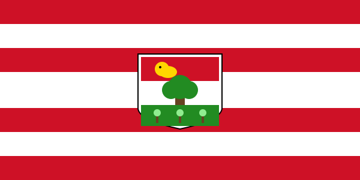
Prince Edward Island
Area: 5,660 sq km. Canada's smallest province. Famous for Anne of Green Gables, red beaches, and potatoes.
-
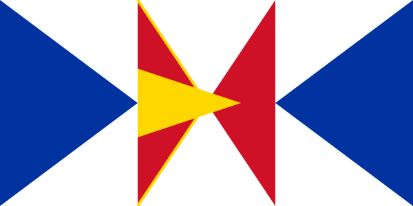
Newfoundland and Labrador
Area: 405,212 sq km. Easternmost province with unique culture, dialect, and stunning coastlines. Icebergs visible in spring.
-
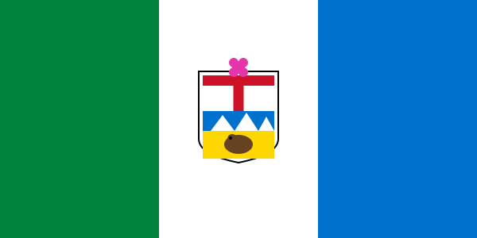
Yukon
Area: 482,443 sq km. Northern territory known for Gold Rush history, wilderness, and midnight sun in summer.
-
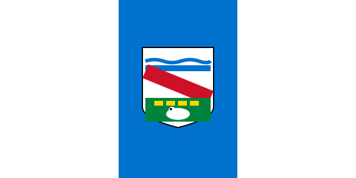
Northwest Territories
Area: 1,346,106 sq km. Vast northern territory with pristine lakes, diamond mines, and incredible aurora borealis.
-
Nunavut
Area: 2,093,190 sq km. Canada's largest and newest territory (1999). Predominantly Inuit population with rich indigenous culture.
Learn about Alberta
Alberta is a dynamic and resource-rich province in western Canada, known for its stunning landscapes, strong economy, and vibrant cities.
Home to the majestic Rocky Mountains, world-famous Banff and Jasper National Parks, and vast prairies, Alberta offers incredible outdoor adventures year-round.
The province boasts a thriving energy sector, a growing tech industry, and a diverse economy, making it a hub for job opportunities.
Its major cities, Calgary and Edmonton, are known for their cultural festivals, professional sports teams, and lively downtown scenes.
Alberta also has a high standard of living, affordable housing, and no provincial sales tax, making it an attractive place to live and work.
Whether you're looking to explore nature, build a career, or experience western Canadian culture, Alberta has something for everyone!
Alberta Public Holidays
- New Year's Day: Wednesday, January 1
- Alberta Family Day: Monday, February 16
- Good Friday: Friday, April 3
- Victoria Day: Monday, May 18
- Canada Day: Tuesday, July 1
- Labour Day: Monday, September 7
- Thanksgiving Day: Monday, October 12
- Remembrance Day: Tuesday, November 11
- Christmas Day: Thursday, December 25
Optional Holidays
- Easter Monday: Monday, April 6
- Heritage Day: Monday, August 3
- National Day for Truth and Reconciliation: Tuesday, September 30
- Boxing Day: Friday, December 26
National and Provincial Parks in Alberta
-
Banff National Park
Established in 1885, Banff is Canada's oldest national park, renowned for its stunning mountain landscapes, diverse wildlife, and outdoor recreational activities.
-
Jasper National Park
As the largest national park in the Canadian Rockies, Jasper offers vast wilderness, majestic peaks, and abundant wildlife, making it a haven for nature enthusiasts.
-
Waterton Lakes National Park
Known for its unique blend of prairie, mountain, and lake ecosystems, Waterton offers breathtaking scenery and a rich variety of flora and fauna.
-
Elk Island National Park
Located near Edmonton, this park is a sanctuary for bison, elk, and over 250 bird species, offering excellent wildlife viewing opportunities.
-
Peter Lougheed Provincial Park
Nestled in the Kananaskis Country, this park boasts rugged mountains, pristine lakes, and extensive trails for hiking, biking, and skiing.
-
Writing-on-Stone Provincial Park
Home to significant Indigenous rock art, this park combines cultural history with unique sandstone formations and scenic landscapes.
-
Dinosaur Provincial Park
A UNESCO World Heritage Site, this park is famous for its rich concentration of dinosaur fossils and striking badlands terrain.
-
Kananaskis Country
A vast area encompassing multiple provincial parks, Kananaskis offers a plethora of outdoor activities amidst stunning mountain scenery.
-
Lesser Slave Lake Provincial Park
Featuring one of Alberta's largest lakes, this park is a popular destination for swimming, boating, fishing, and bird watching.
-
Cypress Hills Interprovincial Park
Straddling the Alberta-Saskatchewan border, this park offers unique landscapes, rich biodiversity, and a range of recreational activities.